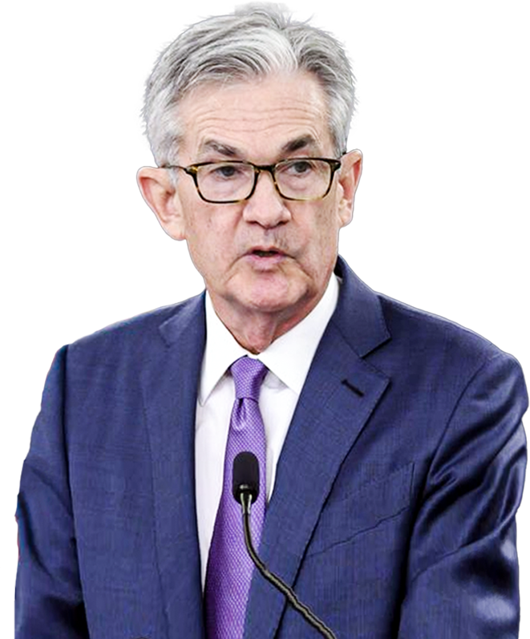
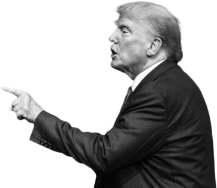
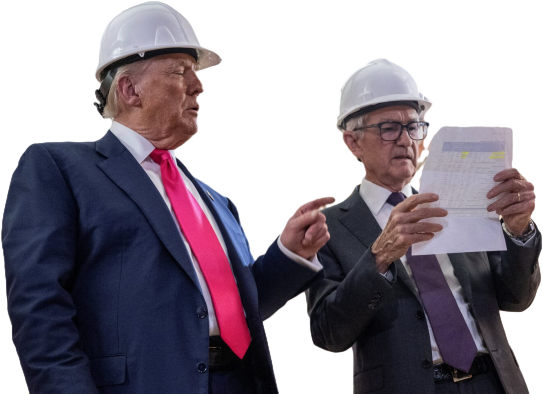

2018.02.05 - 2026.05.15
美联储权力交接
再见，鲍威尔
他经受住了新冠大流行和美联储独立性危机的考验。以上任一件事，都足以让他青史留名。
知名央行政策研究者、沃顿商学院副教授彼得·康提-布朗
深度回顾
查看全部新主席侧写
沃什版美联储前瞻
深入解读：沃什会在哪些细节带来改变
八年曲线，结算鲍威尔时代
功与过：8年主席生涯争议
抗通胀成功 or 误判通胀？
事件还原
后疫情时期，美国出现“四十年未见之高通胀”。美联储起初认为是“临时性通胀”并未及早收紧货币政策，因此被指责处置不当。
批评
过度依赖数据，缺乏前瞻性，错失最佳抗通胀时机。
赞扬
罕见的经济“软着陆”，成功控制住通胀且未造成经济衰退。
果断出手 or 过于激进？
事件还原
为应对疫情、关税、供应链问题等，美联储曾多次大幅加息或降息。
批评
暴力调息造成市场动荡，也让美联储应对后续风险更加被动。
赞扬
应对突发危机，比如疫情冲击，应该果断强硬，经济也是因此迅速复苏。
独立性挑战：来自白宫的压力
4年，特朗普骂了鲍威尔100多次
虽然是经特朗普提名成为美联储主席，但鲍威尔显然没有让特朗普满意。从首个任期到现在，特朗普已经公开发表过至少100次对鲍威尔的不满，指责其降息太慢太少，且其中不乏对鲍威尔的“人身攻击”。

刑事调查鲍威尔，联合司法部施压

美联储总部大楼翻修工程超支引发争议。
司法部因此对鲍威尔发起刑事调查，被认为与美联储降息节奏有关，意在逼迫鲍威尔引咎辞职。
鲍威尔未选择辞职，并将在卸任美联储主席后继续留任美联储理事。
其美联储理事任期最长可到2028年1月底。